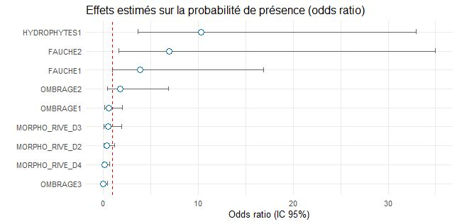

Influence des mesures de gestion et de l'environnement sur la présence d'une espèce patrimoniale
L'Agrion de Mercure (Coenagrion mercuriale) est une espèce de libellule patrimoniale, indicatrice de la qualité des milieux humides. Cette étude vise à comprendre comment les pratiques de gestion et les facteurs environnementaux influencent sa présence ou son absence sur un échantillon de 124 sites favorables en Deux-Sèvres (79). Les problématiques sont :
- Identifier les facteurs influençant la présence de l'Agrion de Mercure ;
- Mettre en évidence les mesures de gestion favorables à l'épanouissement de l'espèce ;
Méthodologie
Les données brutes issues des relevés de l'espèce et de la caractérisation des habitats ont d'abord été fusionnées et nettoyées pour constituer un jeu de données complet et interopérable. Une variable binaire de présence/Absence a ensuite été créée à partir des effectifs observés.
En raison de l'écart important entre le nombre de données et le nombre de variables explicatives (124 données pour 21 variables), un premier filtrage a été réalisé par l'étude des corrélations ente les variables quantitatives, afin de limiter aussi le risque de multicolinéarité. La sélection des variables les plus informatives a ensuite été affinée grâce à une régression régularisée de type Lasso (L1), qui permet d'identifier automatiquement les prédicteurs les plus influents en pénalisant ceux qui aportent peu d'information.
Sur cette base, différents modèles de régressions logistiques (GLM binomial) ont été testés, en simplifiant progressivement la liste des variables afin d'optimiser le compromis entre la capacité explicative et la complexité.
Les performances finales du modèle retenu ont été évaluées à l'aide de la courbe ROC et de l'aire sous la courbe (AUC), indicateur synthétique de la qualité prédictive.
Résultats
Le modèle final retient quatre variables prédictives : présence d'hydrophytes, morphologie de la rive droite, fauche et ombrage.
Les effets estimés montrent que la présence d'hydrophytes multiplie par 10,28 les chances de détecter l'espèce (IC95 % : 2,57–54,62 ; p < 0,01). Une fauche de type 2 accroît également les probabilités de présence (OR=7,03 ; IC95 % : 1,50–41,96 ; p=0,012), tandis qu'un ombrage fort (modalité 3) réduit ces chances d'environ 95,5 % (OR=0,045 ; IC95 % : 0,002–0,49 ; p=0,018). Certaines configurations de morphologie de rive droite, notamment la modalité 4, diminuent significativement la probabilité de présence (OR=0,17 ; IC95 % : 0,03–0,70 ; p=0,013).
Le modèle présente une bonne performance prédictive, avec une aire sous la courbe ROC (AUC) de 0,862, indiquant une capacité élevée à discriminer les situations de présence et d'absence.
Les résultats de cette étude ont été partagés sous forme de facteurs multiplicatifs (odds ratios), faciles à interpréter et partager. Un forest plot récapitulatif des modalités significatives et de leurs impacts permet d'identifier rapidement les facteurs clés influençant la présence (ou l'absence) de l'Agrion de Mercure.

Odds ratios du modèle retenu de régression logistique